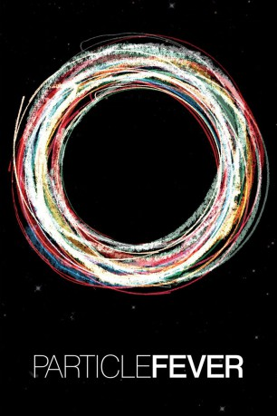

#1166 Particle Fever - Die Jagd nach dem Higgs
 
 IMDB-Wertung: 7.4 / 10
IMDB-Wertung: 7.4 / 10  Metascore: 87
Metascore: 87 
Inszeniert wie ein Thriller erzählt das Kino-Doku-Highlight die Geschichte von sechs Wissenschaftlern auf der Jagd nach dem "Gottesteilchen". Dabei geht es um die ewige Frage: Wie ist die Welt entstanden oder woraus ist das Universums beschaffen? "Particle Fever - Die Jagd nach dem Higgs" erzählt die packende Hintergrundgeschichte zum größten und teuersten Experiment der Menschheit. Im Fokus des Films stehen sechs Wissenschaftler bei ihrem Versuch, die Mysterien unseres Universums zu entschlüsseln. Dabei werden die Erfolge und Rückschläge dieses inspirierenden und wichtigsten wissenschaftlichen Durchbruchs auf unserem Planeten dokumentiert.
Jahr: 2013
Dauer: 99 Minuten
FSK:
Land: USA Studio: AbramoramaTonspuren: DTS-HD - ,
Untertitel: Deutsch, Französisch, Englisch,
Auflösung: 1080p (1920x1080) Größe: 7424 MB
Genre: Dokumentation
Regisseur: Mark Levinson
Drehbuch:
Soundtrack: Robert Miller
Darsteller:
- Martin Aleksa als Himself
- Nima Arkani-Hamed als Himself
- Savas Dimopoulos als Himself
- Monica Dunford als Herself
- Fabiola Gianotti als Herself
- David Kaplan als Himself
- Mike Lamont als Himself
- James Beacham als Himself
- Jed Biesiada als Himself
- Christophe Clement als Himself
- Andy Cohen als Himself
- Katherine Copic als Herself
- Kyle Cranmer als Himself
- Albert de Roeck als Himself
- Georgi Dvali als Himself
- Lyn Evans als Herself
- Gian Giudice als Himself
- Sheldon Glashow als Himself
- Tobias Golling als Himself
- Benedetto Gorini als Himself
- Peter Graham als Himself
- David Gross als Himself
- Magali Gruwe als Herself
- Beate Heinemann als Herself
- Rolph-Dieter Heuer als Himself
- Joe Incandela als Himself
- Peter Jenni als Himself
- Shamit Kachru als Himself
- Verena Kain als Herself
- Juan Maldacena als Himself
- Peter Michelson als Himself
- Maurizio Pierini als Himself
- Mirko Pojer als Himself
- David Poland als Himself
- Surjeet Rahendran als Himself
- Lisa Randall als Herself
- Riccardo Rattazzi als Himself
- Philip Schuster als Himself
- Eva Silverstein als Herself
- Matteo Solfaroli als Himself
- Sara Strandberg als Herself
- Matthew Sudano als Himself
- Raman Sundrum als Himself
- Leonard Susskind als Himself
- Jesse Thaler als Himself
- Natalia Toro als Herself
- Tanmay Vachaspati als Himself
- Sotiris Vlachos als Himself
- Neal Weiner als Himself
- James Wells als Himself
Datei: X:\Dokumentationen\Internet+Science\Particle Fever - Die Jagd nach dem Higgs (2013, FSK, 1920x1080).mkv seit 29.05.2015
Festplatte: HD Serien(SU-Z)+Dokus+Musik
 Es gibt insgesamt 25 Filme in der Gruppe 'Dokumentationen\Internet+Science'
Es gibt insgesamt 25 Filme in der Gruppe 'Dokumentationen\Internet+Science'